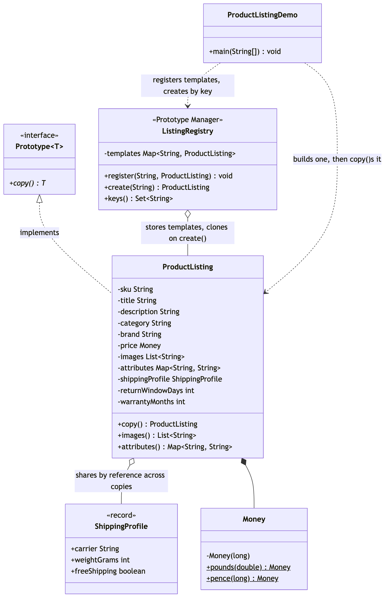

Prototype Pattern
Demonstrates the prototype pattern — a Gang of Four creational pattern — using a marketplace product listing that is expensive to assemble once and needed in several near-identical variants.
It deliberately avoids Java's built-in Cloneable/Object.clone(), which Effective Java Item 13 spends a chapter warning against: a protected method that has to be re-exposed, a checked exception that can never fire, and a shallow copy by default. This project defines its own Prototype<T> interface instead, with a plain copy() method.
Prototype<T>— a one-method interface:T copy(). NoCloneablebaggage, no default implementation, because only the concrete type knows which of its own fields need a real copy and which can be shared.ProductListing— the concrete prototype. Mutable on purpose — a prototype is a working draft you clone and tweak. Itscopy()method has no copying logic of its own; it just calls the constructor again, which already deep-copiesimagesandattributesinto a freshArrayListandLinkedHashMapfor any caller.shippingProfile, an immutable record, is passed straight through and shared by reference across every copy.ShippingProfile— an immutable record (carrier, weight, free shipping), safe to share because nothing can mutate it.Money— the same value type from the static-factory-pattern and builder-pattern projects, reused here for listing prices.ListingRegistry— the GoF's own named variant of Prototype, sometimes called a Prototype Manager: a runtime-keyed shelf of templates that hands back a freshcopy()for a given key, so a caller never needs to know how a template was originally assembled.ProductListingDemo— runnable entry point: one master listing, a clone tweaked into a different variant, proof the master's mutable collections are untouched, proof the sharedShippingProfilereally is the same instance, and aListingRegistryhanding back independent clones by key.
The point in one line: when you already have one fully-assembled object and need another that's almost the same, copy it instead of rebuilding it from scratch — and decide, field by field, what "copy" should mean.
Run
./gradlew runWhich prints:
Master: ProductListing{sku=EARBUD-BLK, title=Wireless Earbuds, price=£59.99, images=2, attributes={color=Black, connectivity=Bluetooth 5.3}}
White variant: ProductListing{sku=EARBUD-WHT, title=Wireless Earbuds (White), price=£59.99, images=1, attributes={color=White, connectivity=Bluetooth 5.3}}
Master after cloning: ProductListing{sku=EARBUD-BLK, title=Wireless Earbuds, price=£59.99, images=2, attributes={color=Black, connectivity=Bluetooth 5.3}}
master.images() unaffected: [earbuds-black-1.jpg, earbuds-black-2.jpg]
master.attributes() unaffected: {color=Black, connectivity=Bluetooth 5.3}
shippingProfile is the same instance: true
first from registry: ProductListing{sku=EARBUD-BLU, title=Wireless Earbuds, price=£59.99, images=2, attributes={color=Blue, connectivity=Bluetooth 5.3}}
second from registry: ProductListing{sku=EARBUD-BLK, title=Wireless Earbuds, price=£59.99, images=2, attributes={color=Black, connectivity=Bluetooth 5.3}}
registry copies are independent instances: true
Rejected: no listing template registered under: does-not-existTest
./gradlew testNine tests, covering copy independence for images and attributes, .equals()-but-not-== for a copy, == reference equality for the shared ShippingProfile, registry-produced instances being independent of each other, and the NoSuchElementException for an unregistered key.
Learning Material
Start here if you are new to the technique — the docs are ordered as a learning path.
| Document | What it covers |
|---|---|
docs/prerequisites.md | What to know and install before you start |
docs/problem-statement.md | The problem, starting from a repeated eleven-argument constructor call and the Cloneable trap |
docs/prototype-pattern-explained.md | The technique, the code walked through, and where it stops paying off |
docs/class-diagram.md | Static structure, and the one shared field |
docs/uml-diagram.md | Runtime call flow — copy(), then the tweaks |
docs/animation.html | Animated, step-by-step walkthrough — open in a browser. Optional narration via the Narration button |
docs/session.md | A 50-minute guided session plan for teaching it |
docs/video-spec.md | The specification the teaching video is built to — outputs, slide system, narration rules, and how to port it to another project |
docs/youtube.md | Title, description, chapters and thumbnail for publishing the video |
docs/thumbnail.png | The 1280×720 image to upload as the YouTube thumbnail |
docs/spec.md | The project specification — problem, code, video and publishing quality bar. Also as spec.html |
video/ | A narrated ~9.5 minute video, plus the script and build pipeline |

The pattern in one picture

Video
video/prototype-pattern-explained.mp4 — 1080p, ~9.5 minutes, narrated. An audio-only version is alongside it. See video/README.md to rebuild or re-record it.
Related
../static-factory-pattern— fixes an unreadable single call by naming and hiding a constructor.../builder-pattern— assembles one object gradually, from nothing, a piece at a time.../abstract-factory-pattern— one choice producing a whole matching set of objects.
Static Factory asks "give me one that…". Builder asks "which pieces, assembled in what order, for one object?". Abstract Factory asks "which whole set?". Prototype asks a question none of the others do: "I already have one of these — how do I get another that's almost the same?"
Also available with a framework
Prototype with Spring Pattern reruns this idea on a real framework, and shows what the framework adds and where it can undo the pattern. Watch this project first.